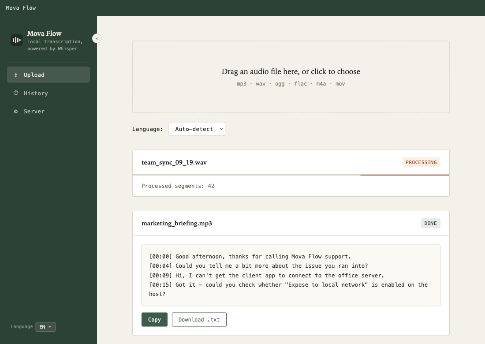
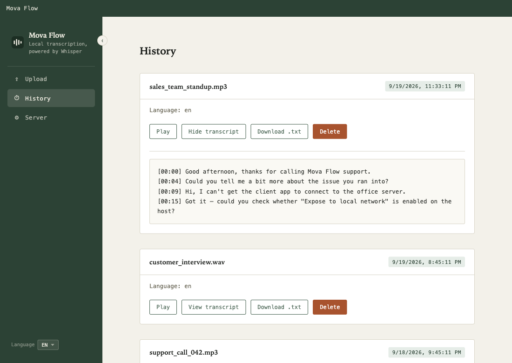
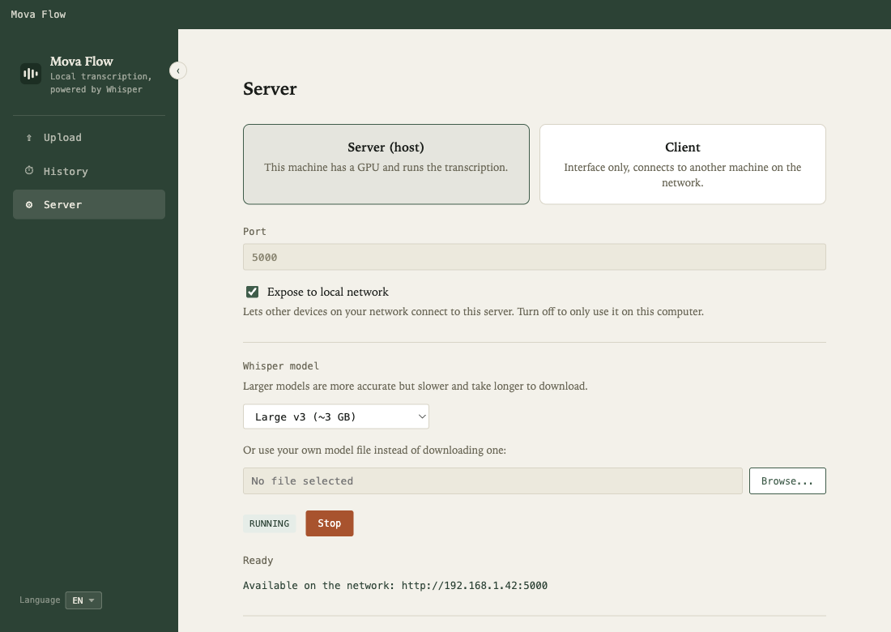
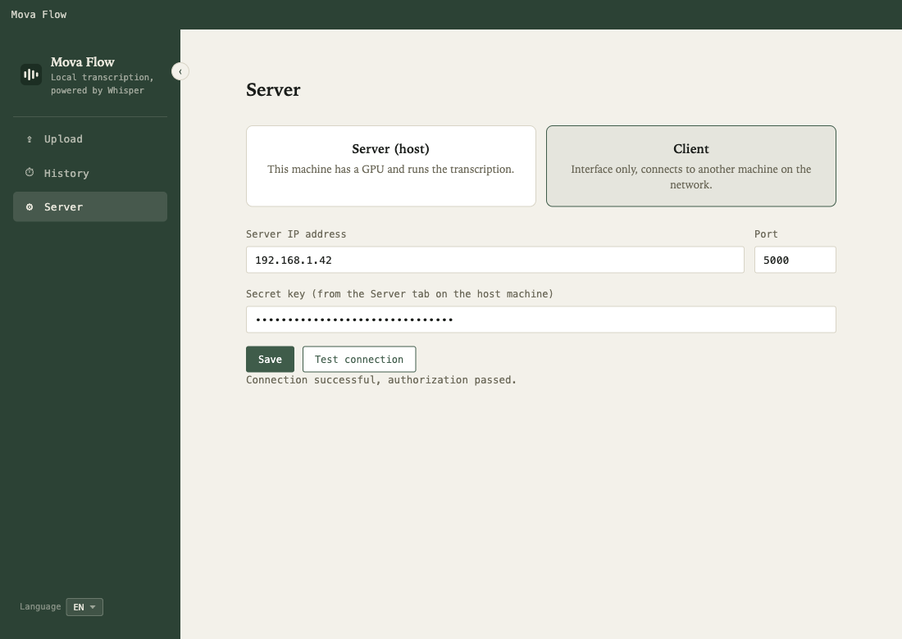

An open-source Electron app built on whisper.cpp. No cloud, no Python, no per-minute API bill — one machine with a GPU transcribes, any other device on your network uses it as a client.

Everything runs on hardware you already own.
Speech-to-text via whisper-cli.exe (whisper.cpp) — audio never leaves your network, no third-party API involved.
One machine with a GPU holds the model and transcribes; every other device on the network connects as a thin client.
Checks for an NVIDIA GPU via nvidia-smi and downloads the matching CUDA or CPU build of whisper.cpp on its own.
From tiny (~75 MB) up to large-v3 (~3 GB), or point it at your own .bin file.
mp3/wav/ogg/flac go straight through; m4a and mov are converted to WAV right in the browser — no extra tools.
Shared secret + short-lived bearer tokens on every request, and history that's physically loopback-only on the host.
Three machines away or on the same desk — same three steps.
A companion Chrome extension — Mova Flow Meet Recorder — captures both sides of a call and sends it straight to your Mova Flow host.
Captures everyone else on the call from the tab, and your own voice from the mic, mixed into one track so the transcript covers the whole conversation.
Adds a Record button right next to mic/camera in Meet's own call controls, or use the same button from the extension's popup.
Uploads to your Mova Flow host over the same shared-secret, bearer-token flow the desktop app uses — nothing leaves your LAN.
If the host can't be reached, the recording is saved to Downloads as a .wav instead — upload it manually once the host is back.
Not yet on the Chrome Web Store — for now, install it unpacked via Developer mode. See the privacy policy for what data it handles.
The whole interface — uploads, history, and server setup for both roles.



A shared secret exchanges for a short-lived bearer token on every request. History is gated to 127.0.0.1 at the code level — a client's own history can never physically reach the host, token or not.
Grab the latest build from the Releases page.
| Platform | Asset | What you get |
|---|---|---|
| Windows | Mova-Flow-Setup-<version>.exe |
Full app — server (host) and client roles |
| macOS | Mova-Flow-<version>.dmg |
Client role only — no local recognition |
| Any OS | Source code (.zip / .tar.gz) | Build it yourself — see the README |
Installers aren't code-signed: Windows may show a SmartScreen warning ("More info" → "Run anyway"); macOS will say the app "is damaged" — open the .dmg and double-click Install & Open.command instead, it installs and clears the flag in one step.